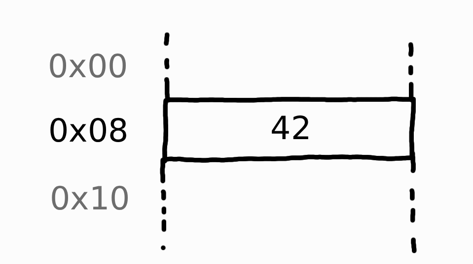

Variables
La programación consiste en hacer programas, que son en resumen un proceso que lee datos, hace operaciones con ellos y devuelve un resultado. Los principales elementos con los que operar son nuestras variables. Esto son cajitas donde guardamos números. (literal fr)
Basic built-in types
En GDScript hay muchos tipos de variables, pero las variables simples (tipos simples de datos) solo hay 3.
bool- Es una variable que solo puede contener 2 valores:trueofalse. Se puede entender como un interruptor encendido o apagado o como 1 o 0. En muchos contextos 0 significafalsey cualquier otro número distinto de 0 siginificatrue.int- Almacena números enteros, esto son los que no tienen decimales.float- Almacena números con decimales.
Crear una variable
Cuando creamos una variable, esta se aloja en la memoria de nuestro ordenador con el valor asignado.
Sintaxis
La sintaxis base para crear variables es:
var <nombre variable> : <tipo variable> = <valor variable>
Entonces si en Godot hacemos:
Estaríamos creando una variable de tipo int con el valor 40 y llamada x. Esto quiere decir que podemos acceder a ella refiriéndonos como x.
Si hacemos:
Cual será ahora el valor de x?
respuesta
42. Efectivamente. Toma una galletita te lo mereces -> 🍪Variables sin valor
Las variables también pueden crearse sin especificar su valor. Ejemplo:
Estas variables se dicen 'no inicializadas', no tienen valores hasta que alguien les asigne uno.
Ej. x = 1.14
Warning
Las variables no inicializadas no pueden ser leidas/usadas para algo que no sea asignarles un valor.
Ejemplos mal: Siendo x una variable sin inicializar, hacer print(x) o var y: float = x + 3
Variables tipadas o no tipadas
Hasta ahora hemos especificado el tipo de las variables al crear una, esto realmente no es obligatorio en lenguajes como GDScript o Python, pero es altamente recomendable. De hecho en muchos lenguajes es más que obligatorio.
Es decir, var x = 123 es perfectamente válido y equivalente a var x: int = 123. Pero estás dándole a Godot la carga de trabajo de averiguar que tipo es esa x.
Además que tener todo tipado hace que godot te avise cuando estés haciendo algo mal, y esta ayuda no te la puede ofrecer si no sabe de que tipo es cada cosa.
Hint
Siempre tipar las variables. Siempre especificar el tipo de todo.
* Se permiten excepciones, puede haber justificación.
Strings
Los strings no son un tipo simple como los anteriores, pero son importantísimos.
Un String es una cadena de caracteres, esto puede ser una letra, una frase entera o un archivo de texto entero. Los Strings son objetos (ya veremos lo que son). La idea es que son un objeto más complejo y con mas chicha que las variables que acabamos de ver.
-
Todos los tipos complejos se escriben con la primera mayúscula,
String. Los únicos tipos simples (empiezan en minúsculas) son los vistosint,float,bool. -
El valor de los strings van entre comillas.
Ejemplos strings
Declarar un string:
Que pasará si...
Es esto lo mismo que:
?respuesta
Sí.La variable saludo en si es exactamente lo mismo que "Hola mundo". Una forma de verlo es que "Hola mundo" ya es una variable que ha creado godot pero sin nombre. Simplemente se la estamos asignando a `saludo` para no perderla. Y pues obviamente al printear por pantalla el valor de la variable pues printea el contenido "Hola mundo".
Uso de variables
Alojamiento de una variable
Por debajo de la manta Godot hace más cosas que solo poner una x con un valor. Esto es una abstracción que hacemos en los lenguajes de programación para ser felices programando.

En esta imagen vemos que tenemos una variable numérica con el valor 42. Lo que vemos a la izquierda es la posición de la memoria del ordenador donde se encuentra este número, es algo así como la dirección de tu casa, pero para variables.
En los lenguajes de programación de alto nivel no tenemos que especificar la dirección de memoria de una variable que queremos referenciar, pues les ponemos nombres y ya. En nuestro ejemplo habíamos llamado a la variable x y Godot solito sabe cuál es la dirección de memoria de esta variable x.
Esta chapa puede no parecer relevante, pero en el futuro veremos tipos de objetos más complejos, en estos, su correcto uso depende en gran parte de entender cómo se alojan en memoria.
Pinceladas de esta complejidad. Un String, en cuántas cajitas cabe? 1?, 2?, infinitas?, se van añadiendo?.
Ya lo veremos jeje.
Resumen
Tu creas variables y objetos tranquilamente en GDScript, pero debes saber que por debajo de la manta hay un proceso de alojamiento en memoria de estos datos. Para tipos más complejos de datos el proceso puede requerir que tengas en cuenta lo que está pasando por debajo.
Warning
Godot no te dirá nada, pero tu ordenador no tiene memoria infinita, no puedes crear infinitas variables u objetos tranquilamente porque te vas a quedar sin memoria RAM.
Uno debe aprender lo que no hacer probándolo, así que ya veremos ejemplos donde nuestros ordenadores van a tirar pantallazo azul jeje